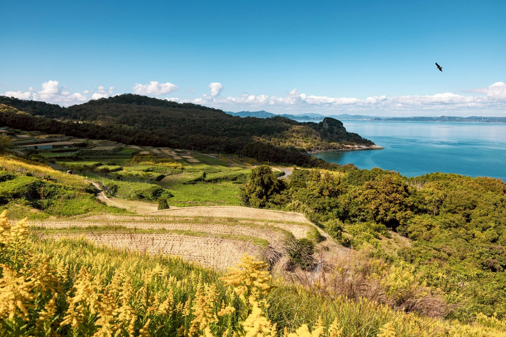
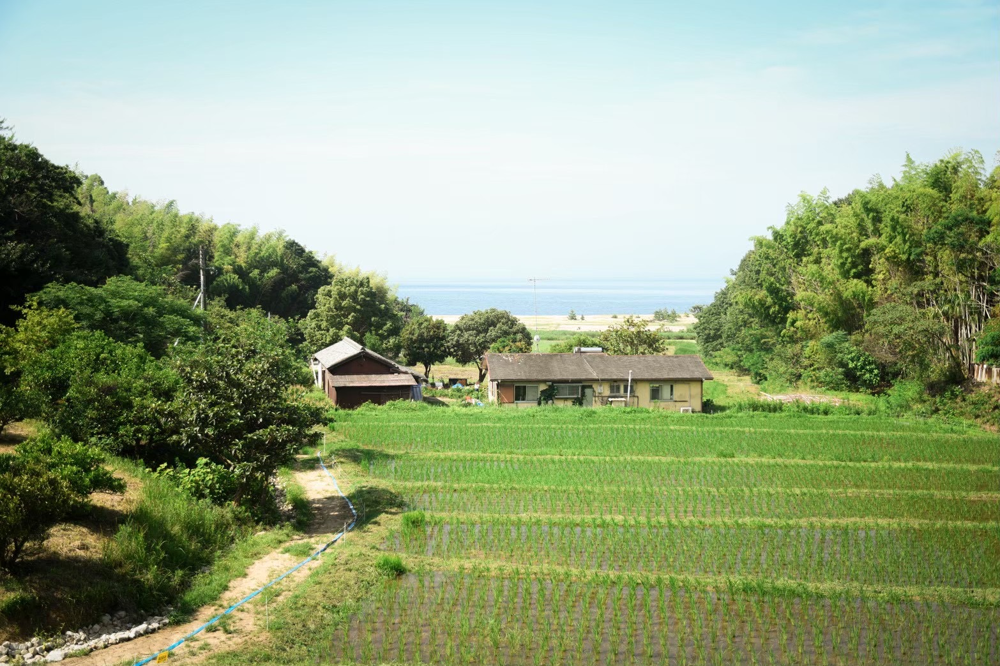
03Kamikohama Farm
神子ヶ浜ファーム
農と海と人が水で繋がり、
自然の仕組みの中に
「立体農業」が生まれた。
この島で人々は、半農半漁の自給自足生活をしていました。
私たちは、当時の自給自足の暮らしや美しい情景が残る場所で、
自然の循環がもたらす、サスティナブルな農園を再生しています。
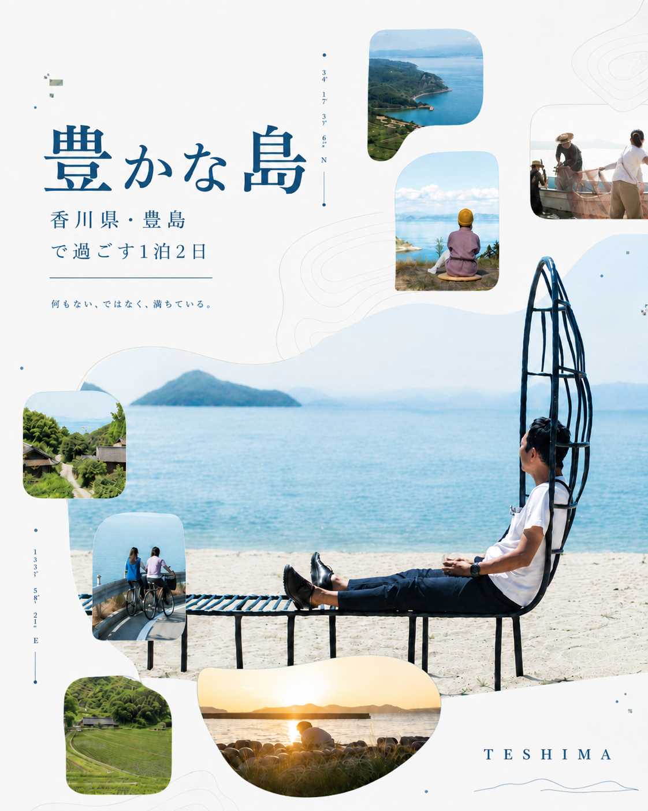
これからの生き方を問い直す旅。
農と海と人が、ひとつの水の流れの中でつながっている島。
その循環にふれることが、自分の暮らしを見つめ直すきっかけに。
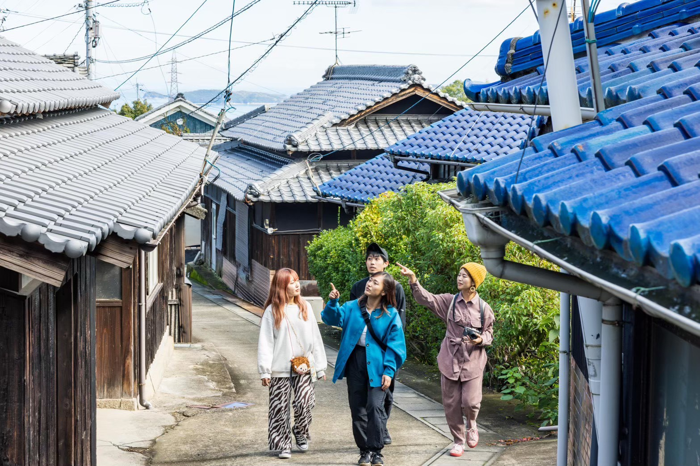
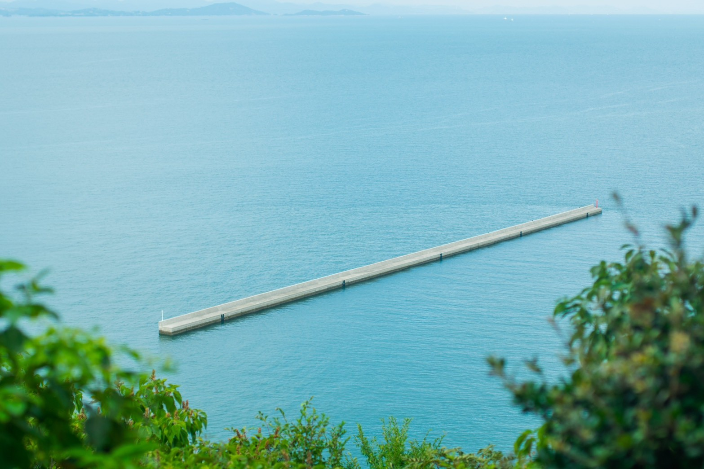
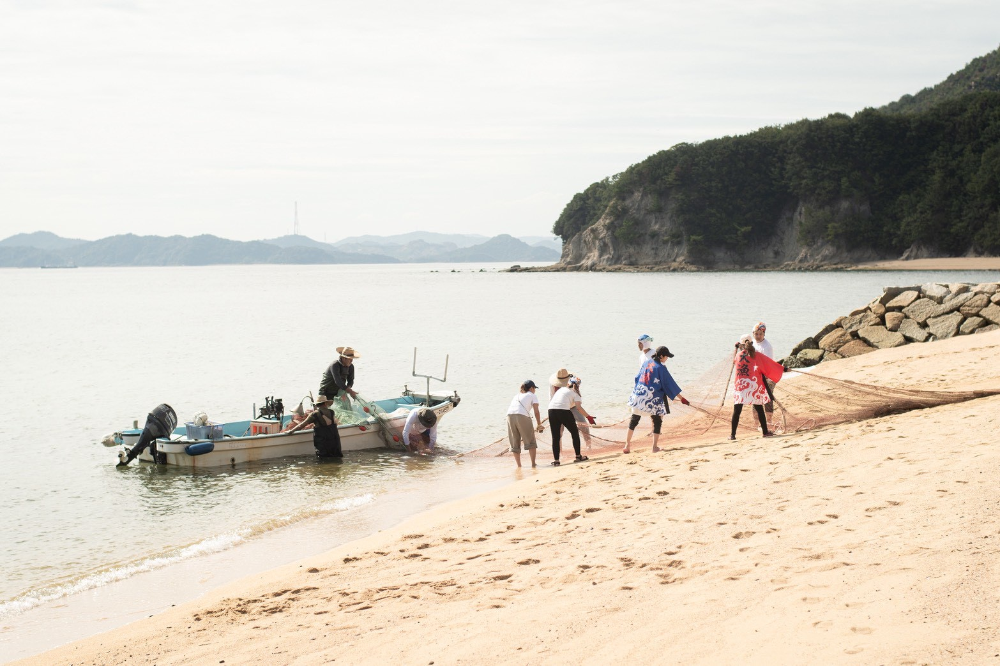
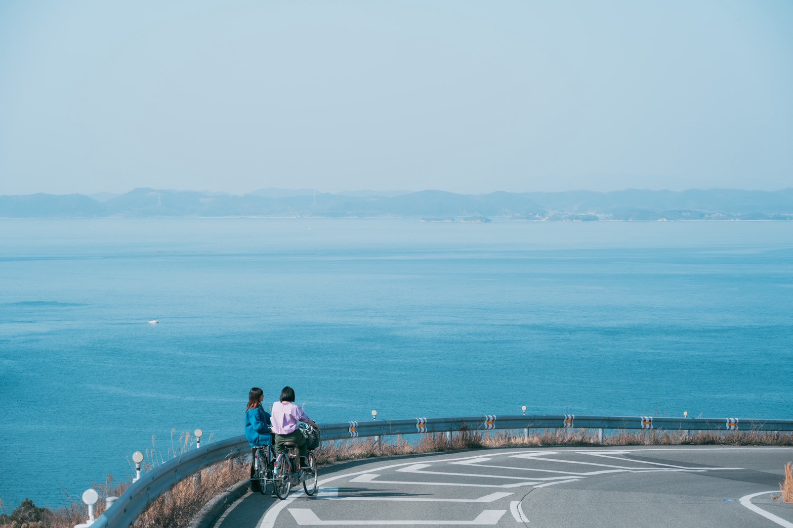
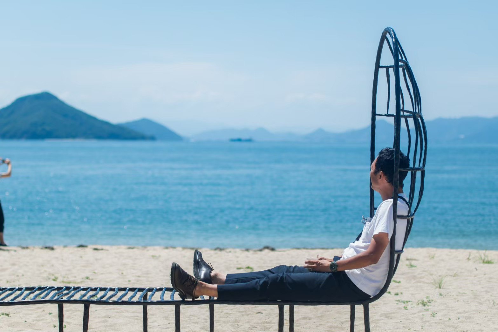
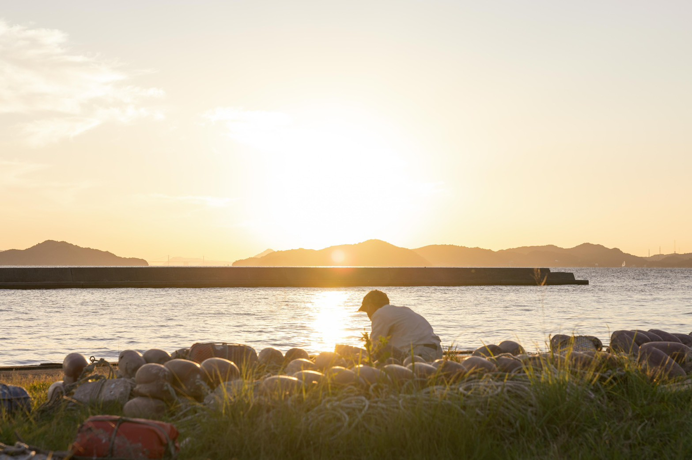
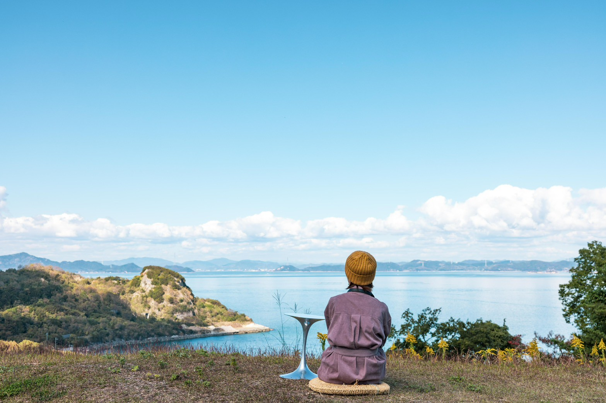
農と海のめぐりにふれ、島を歩き、これからの暮らしを見つめ直す2日間。
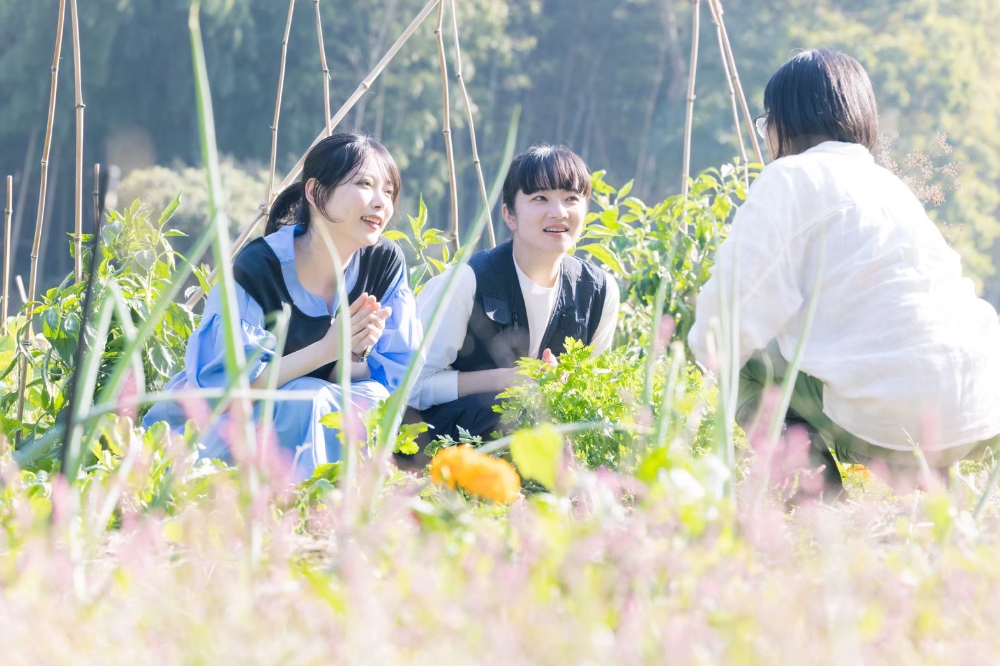
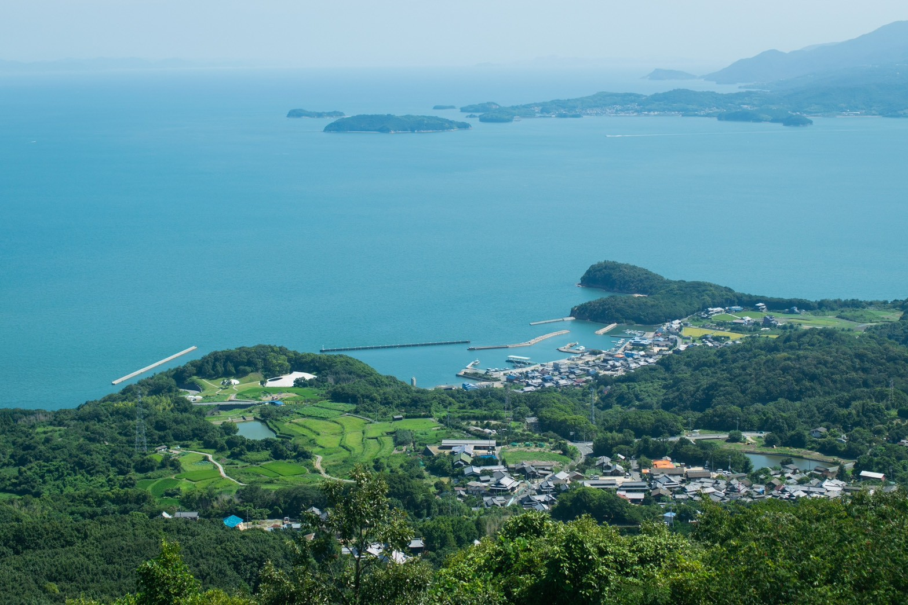


農と海と人が水で繋がり、
自然の仕組みの中に
「立体農業」が生まれた。
この島で人々は、半農半漁の自給自足生活をしていました。
私たちは、当時の自給自足の暮らしや美しい情景が残る場所で、
自然の循環がもたらす、サスティナブルな農園を再生しています。
当時の風景がよみがえる
「神子ヶ浜」へ。
豊島で昔から盛んだった、山地などの斜面を利用し、 果樹園や畜産、畑作を立体的に組み合わせた “立体農業”。 当時の風景がよみがえる「神子ヶ浜」で、自然が循環する仕組みをご案内します。
神戸出身、豊島在住。豊島に移住してもうすぐ7年。 元・歌って踊れる、豊島のローカルコーディネーター、ゆいぴーこと坂口結衣です。
現在は、株式会社アミューズ瀬戸内プロジェクトに所属し、 ツアー・宿泊事業のマネージメントを務めながら、豊島のローカルライフを堪能中。 島の循環と暮らしの中へ、ご案内します。
農と海と人が、水でつながる場所へ。
豊かな島で、これからの生き方を問い直す旅へ。